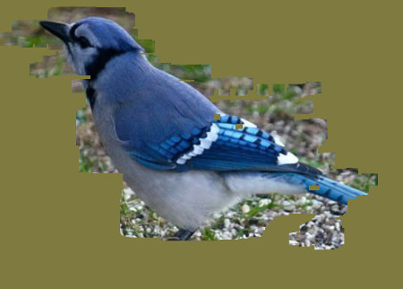

Exercises
This page contains several exercises for Chapter 13 in Introduction to Programming Using Java. Each solution includes a discussion of how a programmer might approach the problem and interesting points raised by the problem or its solution.
Exercise 13.1:
The folder nature-images contains several pictures of animals. (In the web site download, you can find that folder in the chapter13 directory inside the source directory.) Write a "scratch off" program that could be used by a small child that works as follows: The program window starts by showing a large uniformly colored rectangle, with one of the animal pictures hidden behind it. As the user drags the mouse over the image, part of the colored overlay is scratched off, revealing the picture underneath. Here is what it should look like after part of the overlay has been removed:

You can implement this by using one canvas, containing the colored overlay, stacked on top of another canvas that contains the animal picture. (Stacked canvases were used in the sample program ToolPaint.java from Subsection 13.2.4.) To implement scratching off part of the overlay, just clear a small rect in the overlay canvas around the mouse location. The program should have some way to move on to the next picture. Another idea is to have several different sizes of scratchers, so that an impatient child can use a giant one that will remove large swatches of color.
Exercise 13.2:
The StopWatchLabel component from Subsection 13.3.1 displays the text "Timing..." when the stopwatch is running. It would be nice if it displayed the elapsed time since the stopwatch was started. For that, you need to create an AnimationTimer. (See Subsection 6.3.5.) Add an AnimationTimer to the original source code, StopWatchLabel.java, to drive the display of the elapsed time in seconds.
Exercise 13.3:
Improve the program ToolPaint.java, from Section 13.2. You can any improvements you like, but here are some suggestions:
- Have separate menus for "Fill Color" and "Stroke Color".
- Make it possible for the user to draw shapes that are both filled and stroked. For example, add two new tools, "Stroked Filled Rect" and "StrokedFilledOval".
- Add a "Line Width" menu.
- Add keyboard accelerators for some commands (see Subsection 13.5.4).
- Make it possible to use a translucent fill color. A simple approach to this is to use a CheckMenuItem to select either fully opaque or 50% opaque fill. I don't advise trying to implement translucent stroke colors, since that's more difficult.
- Add an "Undo" command that will restore the image to what it was before the last time it was modified. This can be implemented by making a copy of the image before you modify it. It's possible to have a multi-level undo, but that's harder and uses more memory.
Remember that the ToolPaint program requires SimpleDialogs.java.
Exercise 13.4:
The sample program PhoneDirectoryFileDemo.java from Subsection 11.3.2 keeps data for a "phone directory" in a file in the user's home directory. Exercise 11.5 asked you to revise that program to use an XML format for the data. Both programs have a simple command-line user interface. For this exercise, you should provide a GUI interface for the phone directory data. You can base your program either on the original sample program or on the modified XML version from the exercise. Use a TableView to hold the data. The user should be able to edit all the entries in the table. Also, the user should be able to add and delete rows. Include either buttons or menu commands that can be used to perform these actions. The delete command should delete the selected row, if any. New rows should be added at the end of the table.
Your program should load data from the file when it starts and save data to the file when it ends, just as the two previous programs do. For a GUI program, you need to save the data when the user closes the window, which ends the program. To do that, you can add a listener to the program's Stage to handle the WindowHidden event. For an example of using that event, the Mandelbrot Viewer program from Section 13.5 uses it to save preferences when the program ends. For an example of creating an editable table, see ScatterPlotTableDemo.java.
(I suggest keeping things simple. You not being asked to write a real phone book application! The point is mostly to make an editable table. My program has text input boxes for name and number, and an "Add" button for adding a new entry containing the input in those boxes. My program always saves the data, whether or not the user has changed it. The interface will be poor: The user has to double-click a cell to edit it and press return to finish the edit and save the new value. It is possible to make a table with a better editing interface, but to do that, you need to write a new CellFactory class for the table.)